Lab 1 - Using Jupyter Notebooks and Workflow for turning in Assignments#
In this class we will be using Jupyter Notebooks for completing homework and lab assignments. This lab assignment will make sure you are comfortable using these tools.
Jupyter notebooks are Java-Script Object Notation files that allow you to create documents to move and transport code and documentation that can be run interactively. The postfix for the file is .ipynb; you can think of this like a word document for python.
In this lab assignment, we want you to demonstrate your proficiency using this system. We will provide you some code that allows you to create your own personalized T-shirt logo.
Part 0: Instructions for Assignments in the Course#
Computers work by following instructions exactly. Even the smallest of mistakes can cause a computer program not to work entirely. In this class we will expect that all of your work follows instructions exactly. We will provide many ways for you to check that you have not made a simple mistake in your assignments; however, just like a computer program if you do not follow instructions exactly, you may not receive credit for your work. It is important that you read and understand all instructions for all assignments.
Regrades and resubmissions will only be considered if there was an error in the submission or grading process. If instructions are not exactly followed, this is not a valid reason for a regrade or resubmission.
Quiz and Test Taking#
For quizzes and tests, you will be required to record your quiz and exam to ensure you are using only allowed resources. We will be using a monitoring software. For each assignment where monitoring is required, you will be provided with a special link to access the assignment. You will be required to open this link in Google Chrome - other web browsers (specifically, Safari are not supported). You can download Google Chrome here.
You will be required to share your entire screen and record yourself on video. If you do not have a webcam, you will be required to purchase one. To receive credit for monitored assignments, you will be required to start the recording before you open the assignment and end the recording after you have submitted the assignment on GitHub classroom.
Starting Your Assignment#
Warning
Wise is only tested on Google Chrome, and likely will not work on other browsers. Please use Google Chrome for all assignments.
Click this link to start your assignment
This will prompt you to login to our proctoring service.
Part 1: Login in to the Proctoring Service:#
Click the link above.
Login with your Drexel email and Drexel Student ID (e.g., abc123).
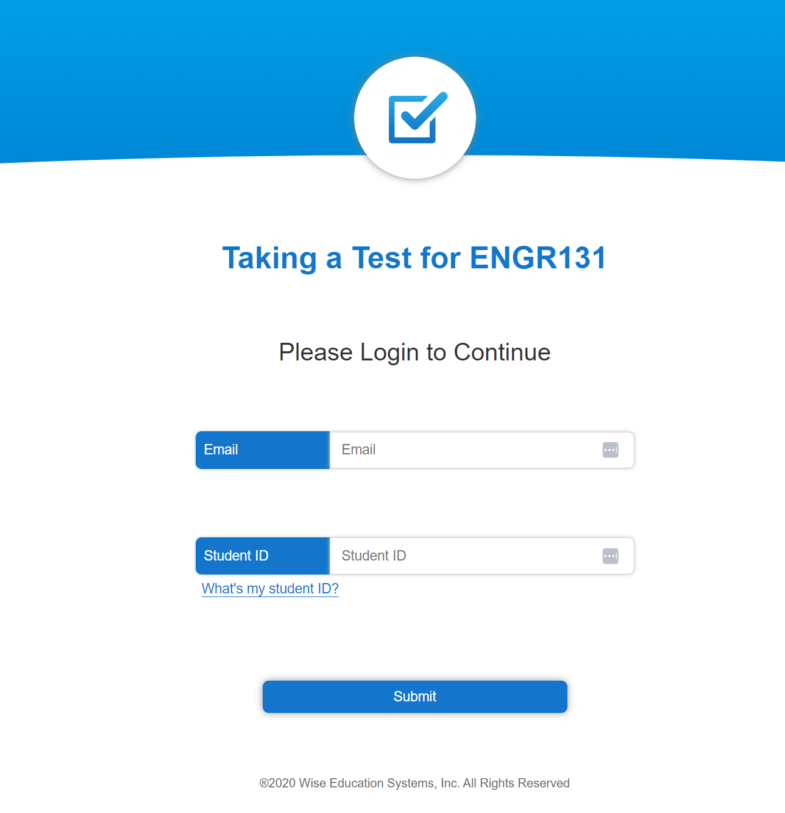
Starting Recording
You need to make sure your Google Chrome web browser is allowed to access your camera and microphone. You will be prompted to allow this. Then, you must share your entire screen and agree to the terms.
Note
Some browsers including Safari do not support screen sharing. Wise is tested on Google Chrome a free web browser. You can download Google Chrome here.
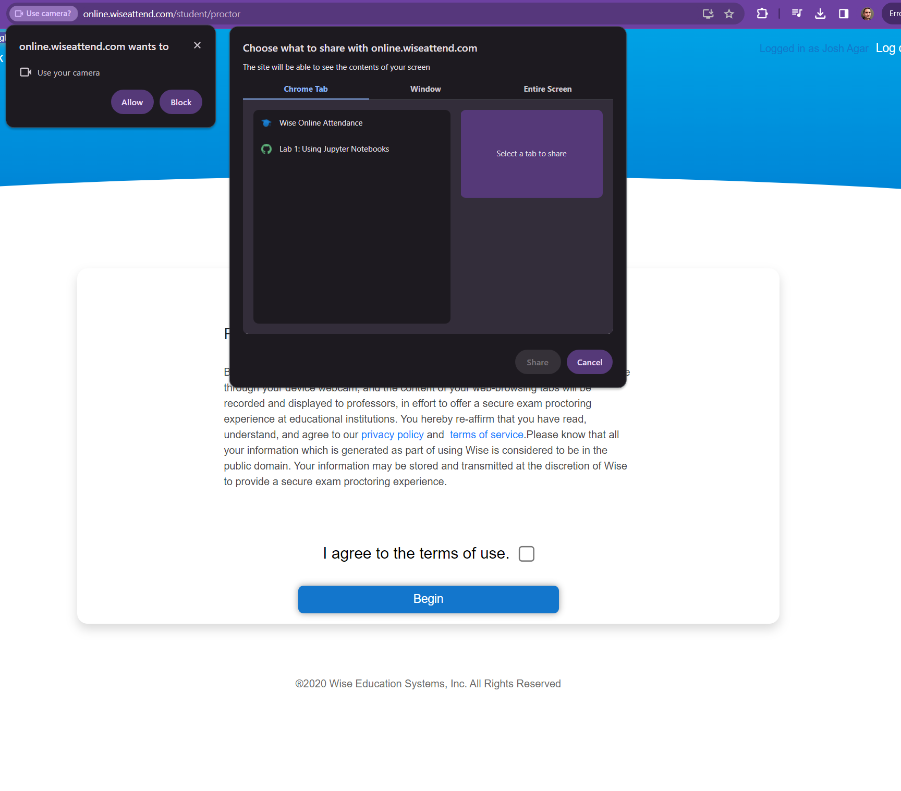
Accept the permissions for screen capture and recording.
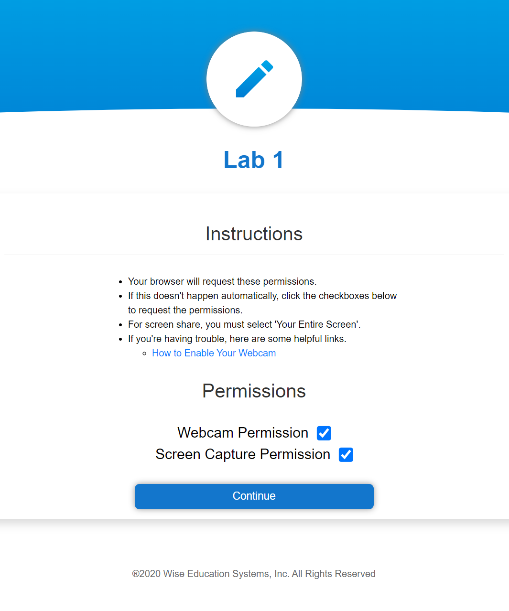
Take a picture of yourself using your webcam, which is used to verify your identity.
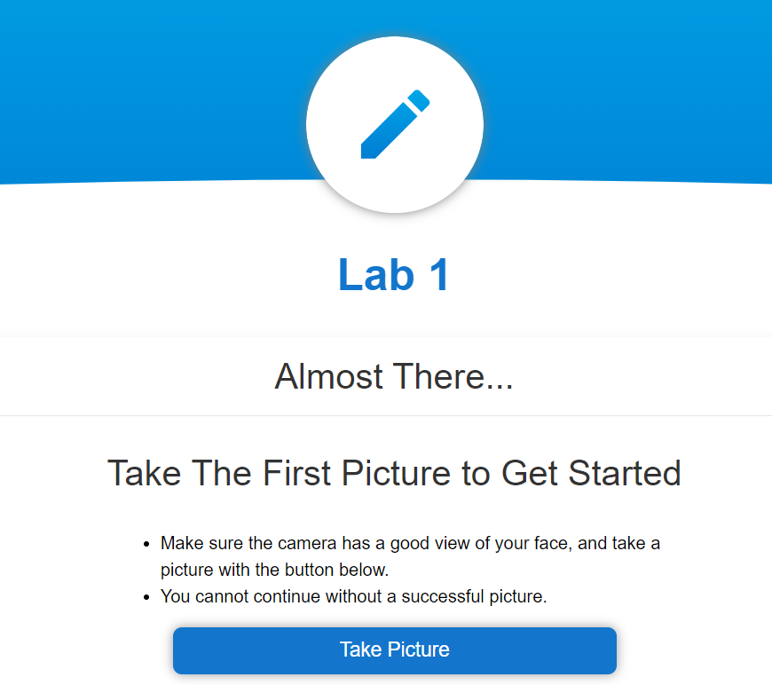
You will be presented with a link to begin your assignment. Click this link, and you will be redirect to your JupyterHub with the assignment loaded.
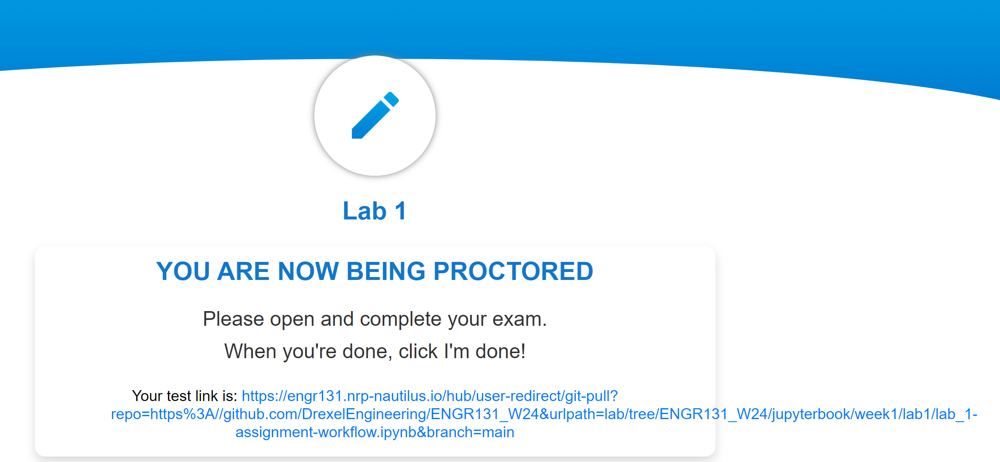
Part 2: Entering Your Information for Credit#
To receive credit for assignments it is important that we can identify your work from others. To do this, we will ask you to enter your information in the following code block.
Before you begin#
Run this block of code that imports and sets up the autograder. This will allow you to check your work.
# Initialize Otter
import otter
grader = otter.Notebook("lab_1-assignment-workflow.ipynb")
# Please provide your first name, last name, Drexel ID (e.g., abc123), and Drexel email. Make sure these are provided as strings.
# "STRINGS ARE TEXT ENCLOSED IN QUOTATION MARKS."
# In the assignments, you will see sections of code that you need to fill in that are marked with ... (three dots). Replace the ... with your code.
import random
first_name = ...
last_name = ...
drexel_id = ...
drexel_email = ...
grader.check("q0-Your-Name")
Part 3: Building Your T-Shirt Logo#
Instructions:
Copy and paste the provided code into the code block below that has the text “# Paste your code here”.
import numpy as np
from PIL import Image, ImageDraw, ImageFont
import skimage
from skimage.transform import rescale, resize, downscale_local_mean
#import matplotlib.pyplot as plt
class your_branded_shirt():
def __init__(self, validation = False):
# identifies the location of the drexel dragon file
image_filename = "./drexel_dragon.png"
# loads the drexel dragon file into a numpy array
self.image = skimage.io.imread(image_filename)
self.font = ("./arial.TTF")
self.validation = validation
def color_random(self):
# selects a random int between 0,255 with size of 3 for RGB.
color = np.random.choice(range(255), size=3).astype("uint8")
# makes sure the color is not too blue to conceal the drexel logo
if color[2] > 150:
color[2] = 150
# returns the color
return color
def rgb_to_hex(self, rgb):
# function to convert RGB to hex
return "%02x%02x%02x" % rgb
def image_canvas(self, text, size):
# Create font
pil_font = ImageFont.truetype(self.font, size=size, encoding="unic")
# gets size of the text
_, _, text_width, text_height = pil_font.getbbox(text)
# creates a canvas based on the size of the text
return np.zeros((text_height, text_width + len(text) // 2, 3), dtype="uint8")
def text_phantom(self, text, size):
# Create font
pil_font = ImageFont.truetype(self.font, size=size, encoding="unic")
_, _, text_width, text_height = pil_font.getbbox(text)
# create a blank canvas with extra space between lines
canvas = Image.new("RGB", [text_width, text_height], (255, 255, 255))
# draw the text onto the canvas
draw = ImageDraw.Draw(canvas)
offset = (0, 0)
# Calls the function to choose a random color
color_ = self.color_random()
# converts the color from RGB to hex
color = "#" + self.rgb_to_hex((color_[0], color_[1], color_[2]))
# draws the text
draw.text(offset, text, font=pil_font, fill=color)
# Convert the canvas into an array with values in [0, 1]
return 255 - np.asarray(canvas)
def multicolor_image(self, text, height):
# creates the canvas
out = self.image_canvas(text, height)
# sets an initial position
pos = 0
# for loop that goes around each letter in the text
for i in text:
letter = self.text_phantom(i, height)
#Add the letter to the image
out[0 : letter.shape[0], pos : pos + letter.shape[1], :] = letter
# adjusts the position so the letters do not overlap
pos += letter.shape[1]
return out
def build_image(self, name):
# creates a 256,256,3 image where 3 represents RGB
bkgr = np.zeros((256, 265, 3), dtype="uint8")
# Sets the background to be a random color
bkgr[:, :, :] = self.color_random()
# Resizes the image to fit within the frame
image_resized = resize(self.image, (106, 150), anti_aliasing=True)
# places the drexel dragon image in the correct location
bkgr[3:109, (256 - 150) // 2 : (256 - 150) // 2 + 150][
image_resized[:, :, :-1].sum(axis=2) < 2
] = (image_resized[:, :, :-1] * 255).astype("uint8")[
image_resized[:, :, :-1].sum(axis=2) < 2
]
# writes the word congratulations as multicolored text
out = self.multicolor_image("Congratulations!", 33)
# adds the word congratulations to the image under the dragon
bkgr[
126 : 126 + out.shape[0],
(256 - out.shape[1]) // 2 : (256 - out.shape[1]) // 2 + out.shape[1],
][out.sum(axis=2) > 0.1] = out.astype("uint8")[out.sum(axis=2) > 0.1]
# moves the starting y position down a line
y = 126 + out.shape[0]
# You type your comment here for what this line of code does.
out = self.multicolor_image(name, 33)
# Adds your name to the image
bkgr[
y + 10 : y + 10 + out.shape[0],
(256 - out.shape[1]) // 2 : (256 - out.shape[1]) // 2 + out.shape[1],
][out.sum(axis=2) > 0.1] = out.astype("uint8")[out.sum(axis=2) > 0.1]
if self.validation:
image = bkgr
else:
# makes the image
image = plt.imshow(bkgr)
# saves the image
plt.savefig(f'{name}_image.png')
# returns the plot
return image
As you can see we have used
#to add comments to the code. This is an important part of your assignments and grade. Comments show us that you not only completed the assignments but understand the code.The following code has 3 problems which need to be fixed so that it can run. We would like you to get comfortable reading error messages and using the
friendly.jupyterto help you discover your errors. There are small errors or corrections that need to be made on lines 5, 25, and 130.
Hint: you can simply view the line numbers by pressing shift + l when in a cell. You can toggle between typing and edit mode using the esc key.
After successfully executing the code defining the class
your_branded_shirt, you need to instantiate the the class by typingshirt = your_branded_shirt().We would like you to call the
shirt.build_imagefunction to produce your image. You do this by typingshirt.build_image("Your Name")into a new cell after running the copied code and the line that instantiates the class. Replace <Your Name> with your actual name. Make sure your name is in"as this defines a string of characters in python.
Hint: cells can be run by pressing shift + enter
To turn in the assignment, please proceed with Part 4.
Run the following code by pressing shift + enter, this is a module that helps explain errors to you.
from friendly.jupyter import *
Question 1: Make Your Branded Shirt
# Paste your code here
...
# Your command to run build image goes here
...
grader.check("q1-Make Your Branded Shirt")
Part 4: Submitting Your Assignment#
Due to the size of the class, we will be using an automatic grading system. Upon submission, your assignment will be graded, and a score file will appear in your git repository. This score file will tell you if you have passed all of the tests. If you have not passed all of the tests, you can resubmit your assignment as many times as you would like before the due date. Assignments will not be accepted after the due date unless prior arrangements have been made with the instructors.
Saving your file:
Press command + s to save your file. You can also go to file and select save and checkpoint.
Downloading and renaming your file:
Go to file and select download. This will download your file to your local computer.
Please name your files YOURDREXELUSERNAME_HW1.ipynb and YOURDREXELUSERNAME_image.png, where you replace “YOURDREXELUSERNAME†with your actual Drexel username (e.g., abc123).
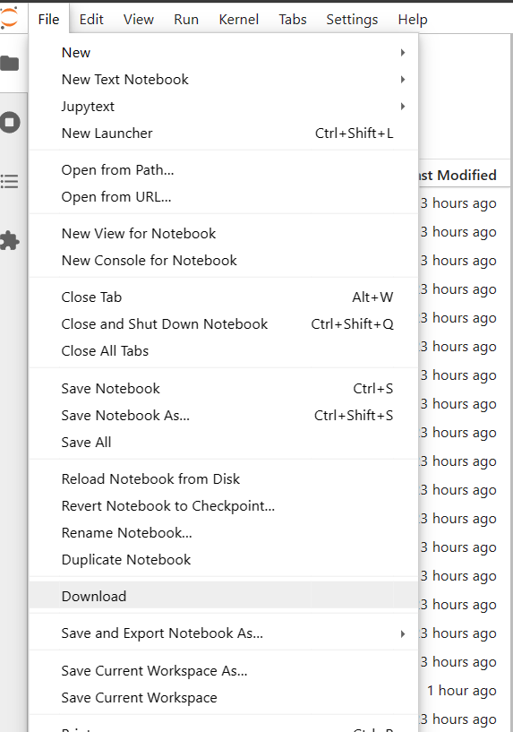
Navigate to GitHub Classroom
Use this link to navigate to the assignment on GitHub classroom.
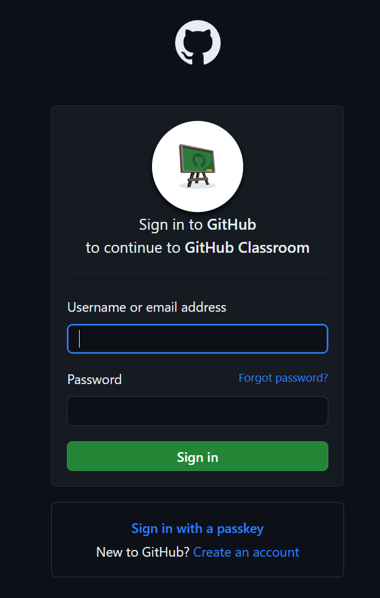
Login/create an account
If you already have a GitHub account, you can login. If you do not have a GitHub account, you will need to create one by clicking create a new account.
4.1 Create an account with a strong password
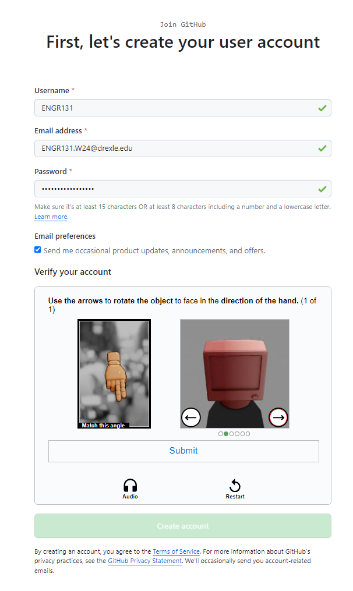
4.2 Verify your email address
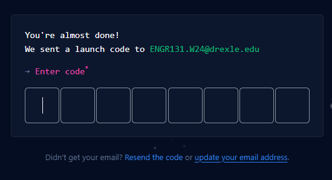
4.3 Return to the assignment on GitHub classroom
If you had to create an account you likely need to go back to GitHub classroom. You can do this by clicking this link again.
Joining the Classroom
You will be prompted to join the classroom. Find your Drexel username to link your username to your GitHub account.
If for some reason your ID is not found click skip to the next step.
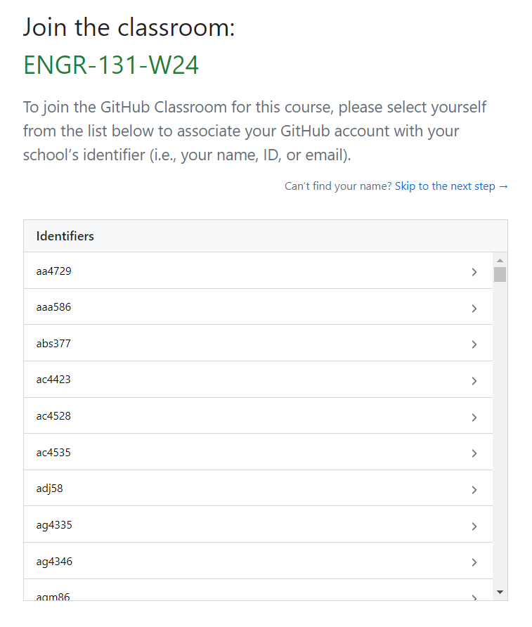
Accepting the assignment
Click accept this assignment to accept the assignment.
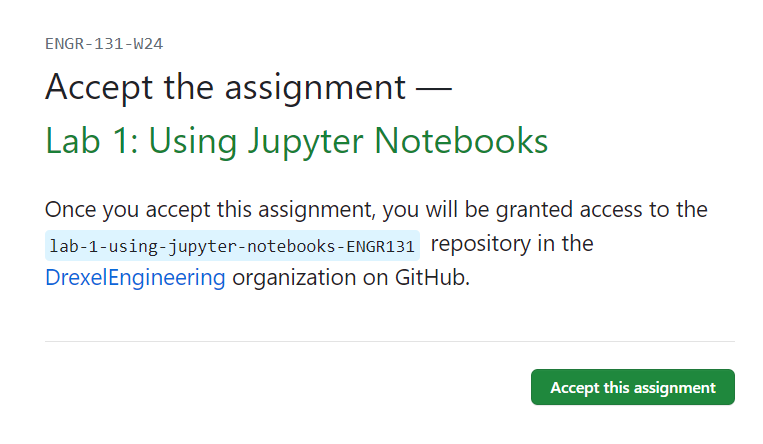
Making your repository
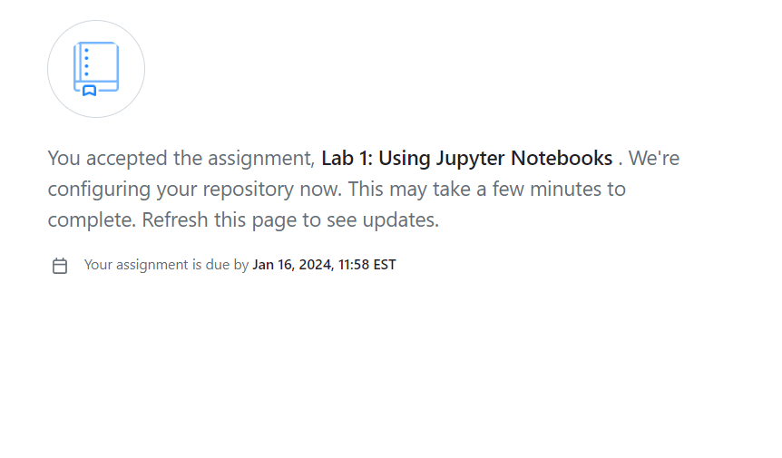
GitHub will now make a repository for you to submit your assignment. You need to hit refresh to monitor the progress. When the repository is ready you will see a screen like this:
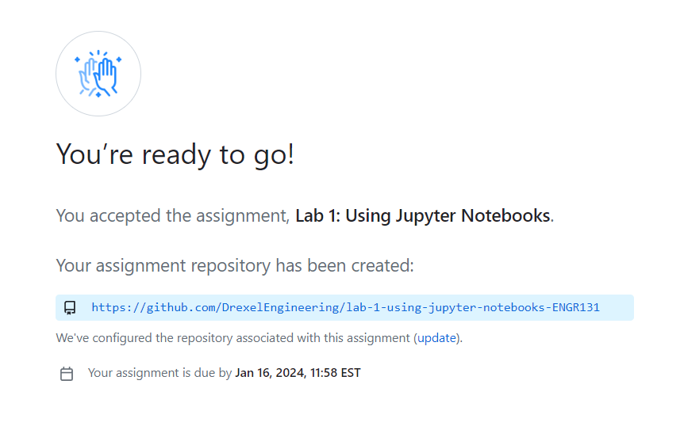
Click the link to your repository.
Uploading your files
In the top right corner, you will see a button that says Add file. Click this button and select Upload files. You will then be prompted to upload your files. You can drag and drop your files into the box or select choose your files to select your files.
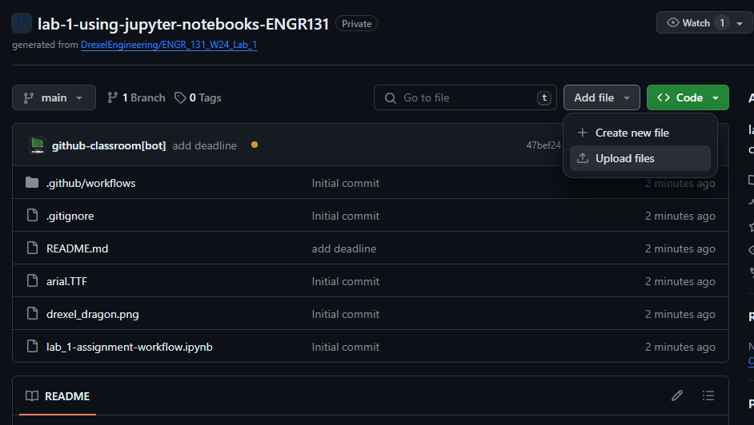
Committing your files
In GitHub, uploading is called committing. This means that the files are saved and tracked by your repository. You can commit your files by scrolling to the bottom of the page and clicking commit changes. Make sure that you are uploading the correct file with a .ipynb extension.

Autograding
Once you submit your file, the autograder will run. You will notice a small yellow dot next to the repository name after refreshing. If you click on the yellow dot, you can see the progress of the autograder. This will take a few minutes to complete. Once complete, this will change to a checkmark.
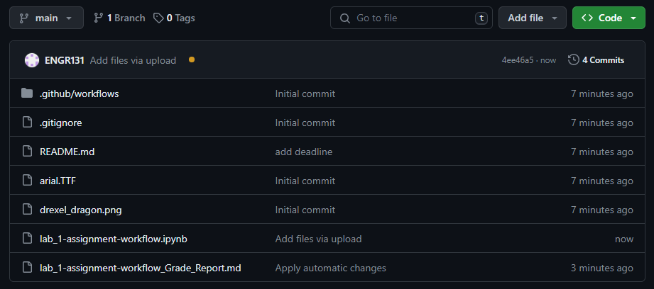
Viewing your score
Each .ipynb file you have uploaded will have a file with the name of your file + Grade_Report.md. You can view this file by clicking on the file name. This will show you the results of the autograder.
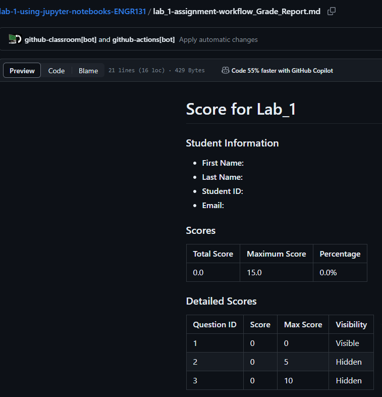
We have both public and hidden tests. You will be able to see the score of both tests, but not the specific details of why the test passed or failed.
Note
In python and particularly jupyter notebooks it is common that during testing you run cells in a different order, or run cells and modify them. This can cause there to be local variables needed for your solution that would not be recreated on running your code again from scratch. Your assignment will be graded based on running your code from scratch. This means before you submit your assignment you should restart the kernel and run all cells. You can do this by clicking Kernel and selecting Restart and Run All. If you code does not run as expected after restarting the kernel and running all cells it means you have an error in your code.